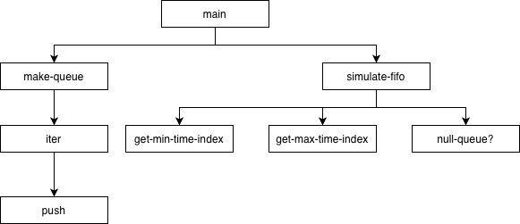
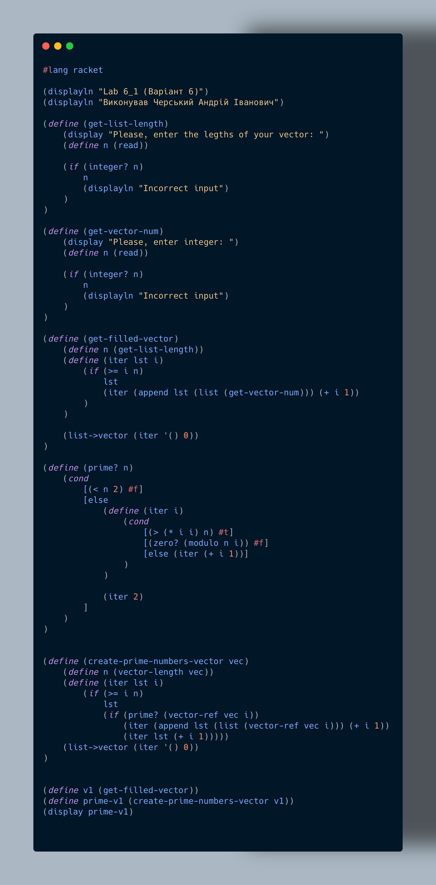
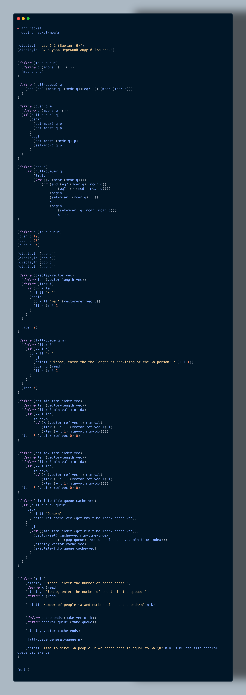
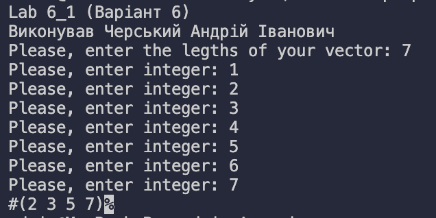

Мета: Опанувати теоретичні основи обробки структур типу векторів і матриць, стеків та черг мовами функціонального програмування та розробити програми їх реалізації
Умова:
1. Створити вектор цілих чисел. Знайти в векторі всі прості числа, скопіювати їх в новий вектор та надрукувати його.
2. На вокзалі працює k кас, проте черга до них одна. Коли усі каси вільні, перші k клієнтів з черги підходять до кас. Інші чекають своєї черги. Як тільки кого-небудь буде обслужено і відповідна каса звільниться, наступна людина з черги підходить до цієї каси. Так продовжується до тих пір, доки не буде обслужено усіх клієнтів. Визначте час, за який буде обслужено усіх клієнтів.
Аналіз:
1.Потрібно створити вектор цілих чисел і виділити серед них прості числа. Це передбачає перевірку кожного числа на простоту — тобто чи ділиться воно тільки на 1 та на саме себе. Всі знайдені прості числа копіюються в новий вектор, який потім виводиться на екран. Основна складність полягає в ефективній перевірці чисел на простоту та правильному формуванні нового вектору.
2.Моделюється робота k кас на вокзалі з однією чергою клієнтів. Перші k клієнтів обслуговуються одночасно, інші чекають своєї черги. Після звільнення каси наступний клієнт у черзі займає її. Потрібно обчислити загальний час обслуговування всіх клієнтів, враховуючи послідовність їх приходу та час, необхідний для обслуговування кожного. Це завдання вимагає моделювання процесу обслуговування, збереження стану кас та правильного визначення моментів звільнення.
Блок-схема:


Код лабораторної работи:


Прикради виконання:


Первірка розрахунків:
Аналіз коду методами штучного інтелекту:
1.У даній роботі реалізовано програму на Racket, яка формує вектор цілих чисел, а потім будує новий вектор, що містить лише прості числа. Програма починається з функцій введення: користувач задає довжину вектора та вводить елементи по одному. Валідація введення базується на перевірці: чи є введене значення цілим числом. Вектор формується через рекурсивну функцію iter, що поступово додає елементи в список, який в кінці конвертується у вектор. Такий підхід забезпечує гнучку конструкцію даних через list→vector, хоч і не є оптимальним за швидкістю через часті append.
Ключовим елементом є функція prime?, що визначає чи є число простим. Вона перевіряє дільники до √n, що суттєво оптимізує обчислення порівняно з повною перевіркою. Логіка визначення простих чисел коректна: числа менші за 2 автоматично відкидаються, а рекурсивний підхід забезпечує компактну реалізацію. Далі, функція create-prime-numbers-vector проходить по всьому вихідному вектору і вибирає лише ті елементи, що задовольняють prime?. Вона також працює через збирання нового списку з подальшим перетворенням у вектор.
Програма в цілому демонструє вміння працювати з векторами, рекурсією та перевірками числових властивостей. Однак у ній присутні неефективності — багаторазове використання append робить роботу зі списками повільною на великих наборах даних. Перевагою є чітка структура, правильна обробка введення та коректна алгоритміка перевірки на простоту. Код легко модифікувати для більш складних операцій над векторами, що робить його хорошою базою для подальших лабораторних робіт.
2.У даній роботі реалізовано симуляцію системи обслуговування черги (FIFO) з кількома "касами" (cache ends). Основою є власноруч створена черга на мутабельних парах (mcons), що дозволяє ефективно реалізувати операції push та pop. Структура черги зберігає указівники на голову та хвіст, що робить додавання O(1). Функція null-queue? коректно визначає порожність, хоча реалізація має зайву обробку спеціального випадку, але загалом працює стабільно. Цей модуль формує фундамент для моделювання потоків обслуговування.
Основна логіка симуляції полягає у використанні вектора кас, де кожен елемент містить час завершення обслуговування для конкретної каси. Алгоритм працює таким чином: кожного разу береться наступна людина з черги, додається її час до каси з мінімальним поточним навантаженням, після чого оновлений стан відображається. Це моделює принцип "завжди вибирати найменше завантажену касу". Додаткові функції get-min-time-index та get-max-time-index використовують рекурсію для пошуку відповідних індексів, що хоч і не найшвидший метод, але повністю вписується в стиль функціонального програмування Racket.
Фінальна частина — функція simulate-fifo — реалізує повний цикл обробки черги, повертаючи максимум із вектора кас, тобто загальний час роботи всієї системи. Такий підхід дозволяє отримати коректний результат симуляції й демонструє взаємодію змінюваних структур (черги) та векторів у Racket. Водночас код містить певні недоліки: початковий вектор кас не ініціалізований нулями, через що значення можуть бути неявно #, що варто виправити. Загалом програма демонструє хороше розуміння структур даних, рекурсії та моделювання процесів обслуговування.
Висновок:
Перший блок коду демонструє реалізацію програми на Racket для роботи з векторами цілих чисел та виділення з них простих чисел. Користувач задає довжину вектора та вводить елементи по одному, при цьому здійснюється перевірка, чи є введене значення цілим числом. Формування вектора реалізовано через рекурсивну функцію, що поступово додає елементи у список із подальшим перетворенням у вектор. Функція prime? перевіряє числа на простоту, перебираючи дільники лише до √n, що оптимізує обчислення та забезпечує правильне визначення простих чисел.
Програма демонструє вміння працювати з рекурсією, перевірками числових властивостей та операціями зі списками й векторами. Вибір рекурсивного підходу і збір нового списку через append забезпечує компактність коду, хоча на великих наборах даних це може бути неефективно. Незважаючи на це, структура програми зрозуміла, введення користувача коректно обробляється, а логіка виділення простих чисел реалізована правильно, що робить код хорошою базою для подальших лабораторних робіт.
Другий блок коду реалізує симуляцію системи обслуговування черги з кількома касами (FIFO). Черга побудована на мутабельних парах (mcons), що дозволяє ефективно реалізувати операції push та pop, а вектор кас відстежує час завершення обслуговування для кожної каси. Алгоритм завжди обирає найменше завантажену касу для наступного клієнта, що правильно моделює процес обслуговування. Незважаючи на невеликі недоліки, наприклад, неініціалізований вектор кас, програма демонструє розуміння роботи зі структурами даних, рекурсії та моделювання потокових процесів, забезпечуючи коректний розрахунок загального часу обслуговування черги.
Menu